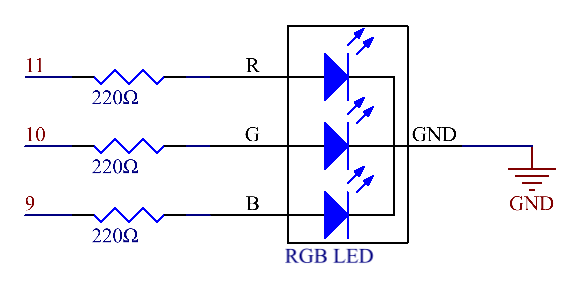

2.3 RGB-LED¶
Überblick¶
In diesem Lektion lernen Sie den Umgang mit RGB-LED. Die RGB-LED kapselt drei rote, grüne und blaue LEDs in ein transparentes oder durchscheinendes Kunststoffgehäuse. Es zeigt mehrere Farben an, indem die Eingangsspannung der drei Pins geändert und die drei Farben auf unterschiedliche Weise addiert werden. Wie in einer Statistik angegeben, kann die RGB-LED 16.777.216 verschiedene Farben erzeugen.
Erforderliche Komponenten¶

Komponenteneinführung¶
RGB-LEDs können in gemeinsame Anoden und gemeinsame Kathoden unterteilt werden. In diesem Experiment wird letzteres verwendet. Die gemeinsame Kathode oder CC bedeutet, die Kathoden der drei LEDs zu verbinden. Nachdem Sie es mit GND verbunden und die drei Pins eingesteckt haben, blinkt die LED in der entsprechenden Farbe.

Eine RGB-LED hat 4 Pins: Der längste ist GND; Die anderen sind Rot, Grün und Blau. Berühren Sie die Kunststoffschale und Sie werden einen Schnitt finden. Der dem Schnitt am nächsten liegende Stift ist der erste Stift, der als Rot, dann als GND, Grün und Blau gekennzeichnet ist.
Oder Sie können sie auf andere Weise unterscheiden. Da GND die längste ist und direkt definiert werden kann, müssen Sie nur die anderen drei Pins bestätigen. Sie können es testen, indem Sie ihnen eine kleine Spannung geben. Der Durchlassspannungsabfall von den drei Pins zum GND beträgt 1,8 V (rot), 2,5 V (blau) bzw. 2,3 V (grün). Therefore, when you connect the same current-limiting resistors to the three pins and supply them with the same voltage, the red one is the brightest, then the green and blue ones. Daher müssen Sie möglicherweise einen Strombegrenzungswiderstand mit unterschiedlichen Widerständen zu den drei Pins für diese Farben hinzufügen.
Fritzing Circuit¶

Hier geben wir einen Wert zwischen 0 und 255 in die drei Pins der RGB-LED ein, damit sie unterschiedliche Farben anzeigt. Nachdem Sie die Pins von R, G und B mit einem Strombegrenzungswiderstand verbunden haben, verbinden Sie sie mit Pin 9, Pin 10 bzw. Pin 11. Der längste Pin (GND) der LED ist mit dem GND des Mega 2560 verbunden. Wenn die drei Pins unterschiedliche PWM-Werte erhalten, zeigt die RGB-LED unterschiedliche Farben an.
Schematische Darstellung¶
Code¶
Code-Analyse¶
In diesem Beispiel ist die Funktion zum Zuweisen von Werten zu den drei Pins von RGB in einer unabhängigen Unterfunktion Farbe () verpackt.
void color (unsigned char red, unsigned char green, unsigned char blue)// the color generating function
{
analogWrite(redPin, red);
analogWrite(greenPin, green);
analogWrite(bluePin, blue);
}
In loop () fungiert der RGB-Wert als Eingabeargument zum Aufrufen der Funktion Farbe(), um zu erkennen, dass das RGB verschiedene Farben ausgeben kann.
void loop() // run over and over again
{
color(255, 0, 0); // turn the RGB LED red
delay(1000); // delay for 1 second
color(0,255, 0); // turn the RGB LED green
delay(1000); // delay for 1 second
color(0, 0, 255); // turn the RGB LED blue
delay(1000); // delay for 1 second
// ...
}
Phänomen Bild¶